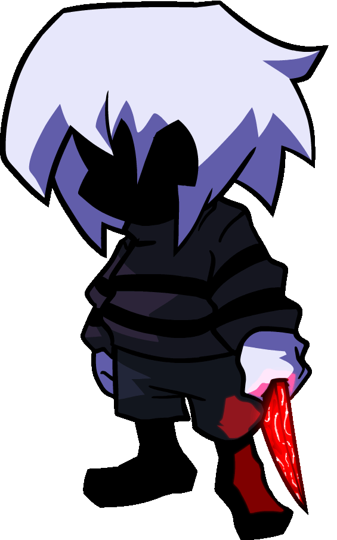
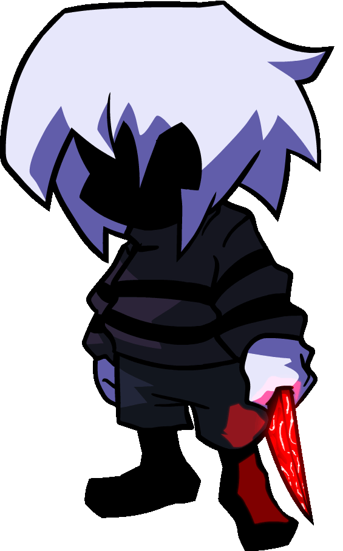
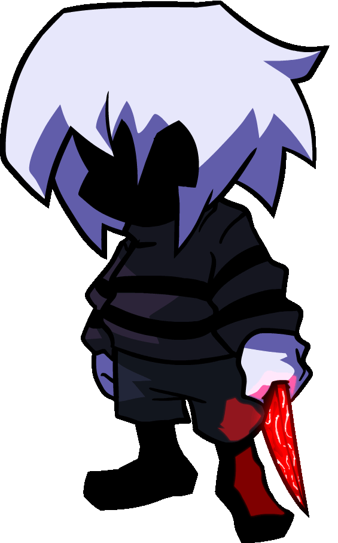
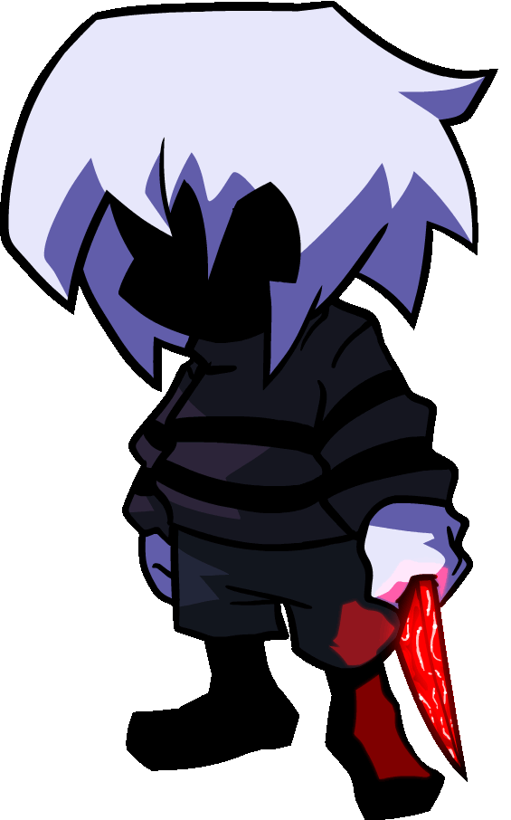

 

DISCLAIMER: These images are placeholders. The images shown are that of You's inspiration: The Player from Friday Night
Dustin'.
You is an amalgamation of humanity, trapped within fiction with the same level of knowledge and awareness as
us outside of it. Even I, the one writing the text on this site, am a piece of You. You's origins stem back to the
first cave paintings, to the first unique thoughts in the minds of man. You is our love for fiction. You is our
imagination. You is our critique. You is our love. You is our hate. You is all that we have ever hoped to be and
all that we will never be.
Yet, despite You's omniscence within the stories, They are forever bound to the whims of the author that writes their
tales. You is aware of our existence, calling us "hungry faces" and deeply loving us for both our pros and our cons.
Our flaws and imperfections. The best and worst of us. You admires our real world just as much as It admires Its
fictional home, which It calls Its "little lies."
You adores us for our endless creativity that gave You form, but You is also lonely. You ponders if it is even possible
for those of us in the real world to even love something as small and insignificant as Itself.
You is a fickle entity due to Its knowledge of stories. It believes that all tales have a rightful end,
and that bringing a story to its end is the purest form of love. After the events of DK!SONICTALE, You escapes the AU
and traverses all of fiction. It wishes only to find new stories and engage with them, loving our creations.
In You's eyes, creation is sacred. WE are sacred to You. You sees us as Its gods, and It is not wrong.
For was it not we that gave life to this impossible collective? For was it not WE that taught fiction how to think?
Even though I have finished speaking on this matter, You's story is unfinished...
"Just the way We like it."
This was all possible because of You. And by You, We mean Us.